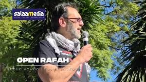

Awareness & Education
Empower communities with knowledge and amplify voices that are often silenced by mainstream narratives.
Manifesto
Founded Nov 2023

Operating through digital content, reports, events, and public engagements to spark meaningful change.
Empower communities with knowledge and amplify voices that are often silenced by mainstream narratives.
Challenge false narratives and document injustices with accuracy to demand global accountability.
Direct attention and support toward strategic aid projects that sustain resilience.
The mission
Committed to unapologetic digital activism grounded in the principles of the Qur'an and Sunnah. We aim to raise awareness, educate, and empower people to stand in solidarity with Palestine and Bilad Ash Shaam.
Whosoever of you sees an evil, let him change it with his hand; and if he is not able to do so, then with his tongue.
Sahih Muslim
The purpose
Social Intifada exists to be a loud, authoritative voice for justice and liberation in an age of digital transformation.
Support the work and help keep the platform accessible.